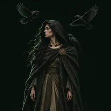
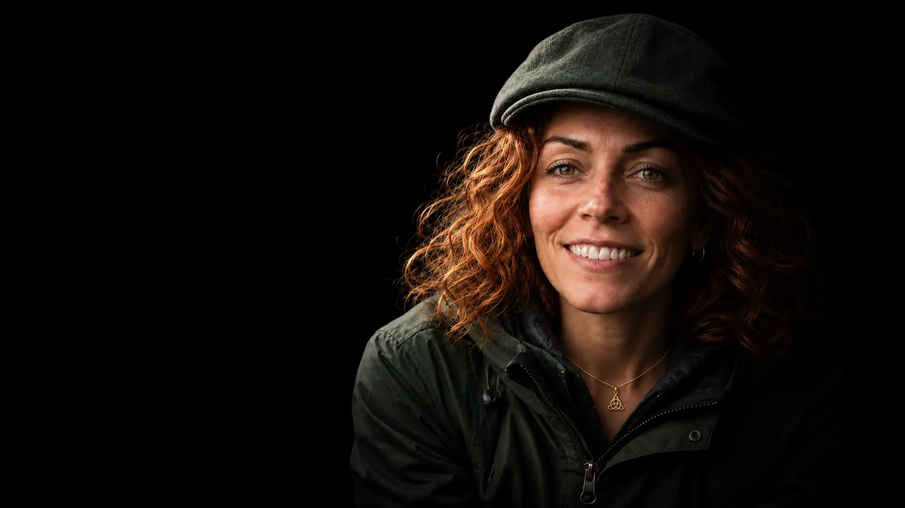
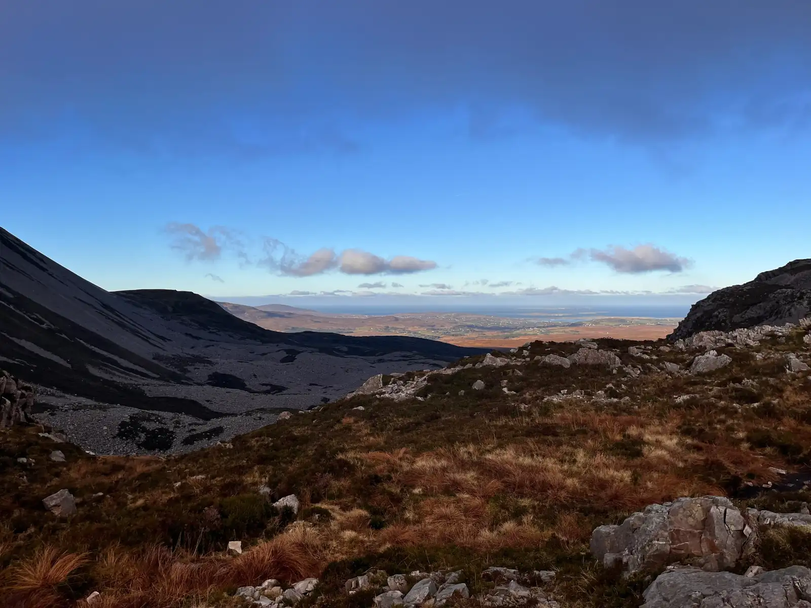

Les enfants de Lir
0:00
Durée : à venir

Le podcast – Eilin Hazelstick conte
Mythes celtes, fêtes ancestrales et coulisses d'une mobilité à l'âge adulte : des épisodes courts pour s'endormir ou voyager en Irlande depuis chez soi.

Tous les épisodes
Mythes, fêtes celtes et coulisses de l'expatriation : un nouvel épisode régulièrement.
Légende
Quatre enfants changés en cygnes pour neuf cents ans : l'une des plus belles et des plus tristes légendes d'Irlande.
Vie quotidienne
Arrivée, installation, premières démarches : ce qui m'a surprise et ce que j'aurais aimé savoir avant.
Légende
La fête celte qui ouvre la saison sombre, quand le voile entre les mondes devient plus fin.

Votre hôtesse
On associe souvent Erasmus+ aux étudiants. Pourtant, le programme s'adresse aussi aux adultes : formation, mobilité professionnelle, apprentissage de la langue. Partie de Nantes, je raconte ce que l'on vit quand on se lance.
Collaborations
Marques, offices de tourisme, organismes de formation, médias ou podcasteurs : je suis ouverte aux collaborations autour de l'Irlande, de la mobilité adulte et de la culture celte.
Une idée de partenariat, d'interview ou de collaboration ? Racontez-la-moi en quelques lignes : je vous réponds sous 48 heures ouvrées.
Proposer une collaborationVotre messagerie ne s'ouvre pas ? Écrivez-moi à eilin.hazelstick@gmail.com